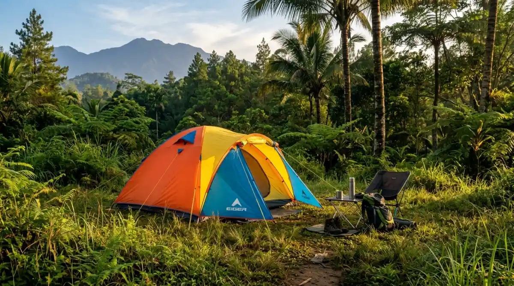
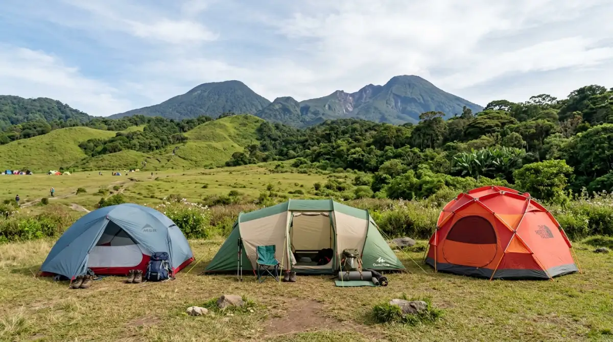

Tenda dome bagus untuk camping — pilihan tepat untuk pemula maupun camper berpengalaman.Tenda bagus untuk camping adalah tenda yang ringan, tahan air, sesuai kapasitas, dan mudah dipasang sesuai kondisi medan serta cuaca tujuan kemah Anda.
- Apa Itu Tenda Camping dan Mengapa Pemilihan yang Tepat Penting?
- Apa Saja Tipe Tenda Camping yang Tersedia?
- Bagaimana Cara Memilih Tenda Bagus Berdasarkan Spesifikasi Teknis?
- Apa Perbedaan Single Wall dan Double Wall pada Tenda?
- Faktor Apa yang Sering Diabaikan Saat Membeli Tenda?
- Berapa Anggaran yang Wajar untuk Tenda Camping Berkualitas?
- Kesalahan Umum Saat Memilih Tenda untuk Camping
- FAQ
Apa Itu Tenda Camping dan Mengapa Pemilihan yang Tepat Penting?
Tenda camping adalah shelter portabel yang melindungi penggunanya dari hujan, angin, embun, dan serangga selama berada di alam terbuka. Pemilihan tenda yang salah dapat mengakibatkan tidur basah, kedinginan, atau beban berlebih saat pendakian.
Menurut data dari Outdoor Industry Association (2024), lebih dari 57 juta orang di Asia Tenggara melakukan kegiatan berkemah setidaknya sekali per tahun, dan keluhan nomor satu pemula adalah memilih tenda yang tidak sesuai kondisi lapangan.
Tenda yang bagus bukan selalu tenda yang mahal. Tenda yang tepat adalah tenda yang sesuai dengan:
- Jumlah pengguna
- Kondisi cuaca dan medan
- Metode perjalanan (backpacking atau car camping)
- Anggaran yang realistis
Apa Saja Tipe Tenda Camping yang Tersedia?
Tipe tenda menentukan kemudahan pemasangan, stabilitas, dan bobot. Berikut tipe utama yang perlu Anda pahami sebelum membeli.
Tenda Dome
Tenda dome adalah tipe paling populer untuk pemula. Struktur dua tiang bersilang menghasilkan bentuk kubah yang stabil dan mudah dipasang. Bobot umumnya antara 1,5 hingga 3 kg untuk kapasitas dua orang. Tenda dome cocok untuk camping di area yang tidak terlalu berangin.
Tenda Tunnel
Tenda tunnel menggunakan beberapa tiang paralel yang menciptakan ruang lebar seperti lorong. Tipe ini menawarkan ruang interior lebih luas dibanding dome dengan bobot serupa, namun kurang stabil di angin kencang tanpa pasak yang kuat.
Tenda Geodesic
Tenda geodesic memiliki banyak tiang yang saling menyilang, menghasilkan struktur sangat kuat terhadap angin dan salju. Tipe ini umum digunakan untuk ekspedisi pegunungan tinggi. Bobotnya lebih besar dan harganya lebih tinggi, namun keandalannya di kondisi ekstrem jauh di atas rata-rata.
Tenda Ultralight
Tenda ultralight dirancang khusus untuk backpacker yang mengutamakan beban ringan. Bobotnya bisa di bawah 1 kg, namun biasanya mengorbankan ruang dan daya tahan material. Cocok untuk solo hiking jarak jauh.
Bagaimana Cara Memilih Tenda Bagus Berdasarkan Spesifikasi Teknis?
Spesifikasi teknis tenda menentukan performa nyata di lapangan, bukan sekadar tampilan di foto produk.
Waterproof Rating (Hydrostatic Head)
Waterproof rating diukur dalam milimeter HH (Hydrostatic Head). Semakin tinggi angkanya, semakin tahan air material tersebut.
- 800-1.000 mm HH: Cukup untuk gerimis ringan
- 1.500-2.000 mm HH: Standar minimum untuk hujan sedang
- 3.000 mm HH ke atas: Cocok untuk hujan lebat dan kondisi basah ekstrem
Untuk kondisi iklim tropis seperti Indonesia yang sering hujan deras, pilih flysheet dengan rating minimal 2.000 mm HH.
Material Tiang (Pole)
- Tiang fiberglass: Murah, lebih berat, cukup untuk camping kasual
- Tiang aluminium: Ringan, kuat, lebih mahal, standar untuk hiking serius
- Tiang carbon fiber: Paling ringan, harga tertinggi, untuk ultralight setup
Kapasitas Sebenarnya
Kapasitas yang tertulis di tenda umumnya adalah kapasitas “snug fit” tanpa perlengkapan. Tenda berlabel 3 orang secara realistis nyaman untuk 2 orang dengan perlengkapan tidur lengkap. Pertimbangkan membeli tenda satu tingkat di atas jumlah pengguna.

Perbandingan berbagai tipe tenda camping — dome, tunnel, geodesic, dan ultralight.Apa Perbedaan Single Wall dan Double Wall pada Tenda?
Tenda single wall hanya memiliki satu lapisan material, sementara double wall memiliki inner tent dan flysheet terpisah.
Tenda double wall lebih umum direkomendasikan karena ruang udara antara inner dan flysheet mengurangi kondensasi di dalam tenda secara signifikan. Di iklim lembap seperti Indonesia, kondensasi adalah masalah nyata yang membuat sleeping bag dan perlengkapan menjadi basah dari dalam.
Faktor Apa yang Sering Diabaikan Saat Membeli Tenda?
Banyak pembeli fokus pada harga dan desain, tetapi mengabaikan faktor teknis yang justru paling menentukan pengalaman di lapangan.
Ukuran Packed dan Cara Membawa
Pastikan ukuran tenda saat dikemas sesuai dengan kapasitas tas ransel Anda. Tenda yang ringan namun voluminous tetap menjadi beban berat secara fisik saat dibawa.
Ventilasi
Ventilasi yang buruk menyebabkan kondensasi berlebih. Cari tenda dengan bukaan mesh di bagian atas atau sisi inner tent untuk sirkulasi udara yang baik.
Kemudahan Setup
Untuk pemula, tenda dengan sistem warna-warna tiang (color-coded poles) dan konektor klip jauh lebih mudah dipasang, terutama dalam kondisi gelap atau hujan.
Luas Vestibule
Vestibule adalah area terlindung di luar pintu utama. Ruang ini berguna untuk menyimpan sepatu, tas, atau perlengkapan basah agar tidak masuk ke area tidur.
Berapa Anggaran yang Wajar untuk Tenda Camping Berkualitas?
Harga tenda camping berkisar sangat lebar tergantung merek, material, dan tipe.
- Tenda entry-level (200.000-500.000 rupiah): Cocok untuk camping kasual sesekali di cuaca normal
- Tenda mid-range (500.000-1.500.000 rupiah): Kualitas layak untuk pendakian reguler, bahan lebih baik
- Tenda premium (1.500.000 rupiah ke atas): Material teknikal, bobot ringan, ketahanan tinggi untuk kondisi ekstrem
Survei gear camping Asia Tenggara tahun 2023 menunjukkan bahwa 68% pendaki dengan pengalaman lebih dari 3 tahun menyesal membeli tenda terlalu murah di awal dan akhirnya membeli ulang.
Investasi pada tenda mid-range sejak awal umumnya lebih ekonomis dalam jangka panjang.
Kesalahan Umum Saat Memilih Tenda untuk Camping
- Membeli berdasarkan tampilan tanpa mengecek spesifikasi teknis
- Mengabaikan berat total tenda termasuk tiang, pasak, dan tas
- Percaya angka kapasitas tanpa mempertimbangkan ruang perlengkapan
- Tidak mencoba memasang tenda sebelum hari keberangkatan
- Membeli tenda 3 musim untuk medan pegunungan tinggi yang memerlukan 4 musim
Memilih tenda bagus untuk camping bukan tentang merek paling terkenal atau harga paling tinggi. Pilih tenda dome double wall sebagai titik awal yang aman untuk pemula. Pastikan flysheet memiliki waterproof rating minimal 1.500 mm HH. Beli kapasitas satu tingkat di atas jumlah pengguna. Periksa bobot total sebelum memutuskan, bukan hanya bobot badan tenda. Investasi pada tenda mid-range sejak awal akan menghemat biaya dan frustrasi di kemudian hari.
FAQ — Memilih Tenda Camping
1. Apa tenda yang paling bagus untuk pemula?
Tenda dome double wall kapasitas dua orang dengan flysheet waterproof 2.000 mm HH dan tiang aluminium adalah pilihan terbaik untuk pemula. Tipe ini mudah dipasang, stabil, dan tersedia di kisaran harga terjangkau.
2. Apakah tenda mahal selalu lebih baik?
Tidak selalu. Tenda mahal umumnya menawarkan bobot lebih ringan dan material lebih tahan lama, namun untuk camping kasual di cuaca normal, tenda mid-range sudah cukup memadai.
3. Berapa waterproof rating minimum yang disarankan untuk camping di Indonesia?
Minimal 1.500 mm HH untuk flysheet dan 3.000 mm HH untuk groundsheet, mengingat intensitas hujan tropis yang tinggi.
4. Apakah perlu membeli footprint terpisah?
Footprint atau groundsheet tambahan disarankan untuk memperpanjang umur lantai tenda, terutama jika sering berkemah di permukaan berbatu atau kasar.